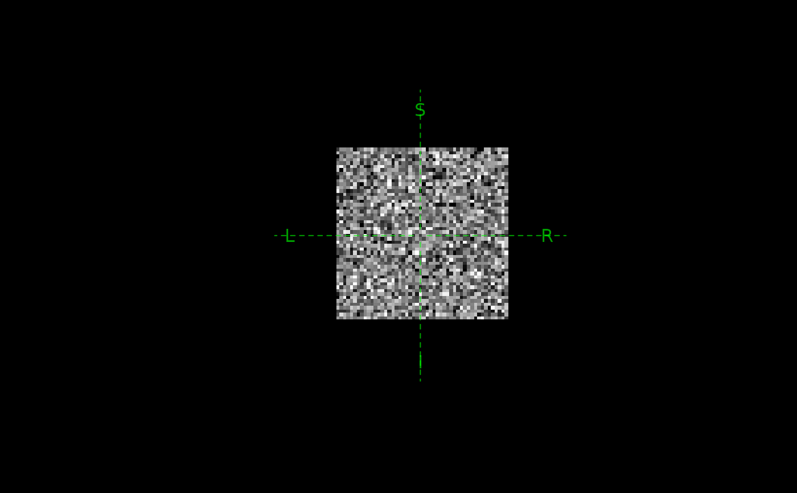
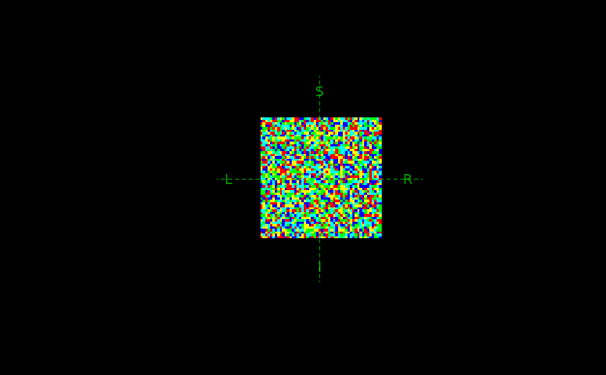

Convert array, path, or 'NIfTI' images in other formats to 'ieegio'
image volume instance
Usage
as_ieegio_volume(x, ...)
# S3 method for class 'character'
as_ieegio_volume(x, ...)
# S3 method for class 'ieegio_volume'
as_ieegio_volume(x, ...)
# S3 method for class 'array'
as_ieegio_volume(x, vox2ras = NULL, as_color = is.character(x), ...)
# S3 method for class 'niftiImage'
as_ieegio_volume(x, ...)
# S3 method for class 'nifti'
as_ieegio_volume(x, ...)
# S3 method for class 'ants.core.ants_image.ANTsImage'
as_ieegio_volume(x, ...)Arguments
- x
R object such as array, image path, or objects such as
'RNifti'or'oro.nifti'image instances- ...
passed to other methods
- vox2ras
a
4x4'affine' matrix representing the transform from 'voxel' index (column-row-slice) to 'RAS' (right-anterior-superior) coordinate. This transform is often called'xform','sform','qform'in 'NIfTI' terms, or'Norig'in 'FreeSurfer'- as_color
for converting arrays to volume, whether to treat
xas array of colors; default is true whenxis a raster matrix ( matrix of color strings) and false whenxis not a character array.
Value
An ieegio volume object; see imaging-volume
Examples
shape <- c(50, 50, 50)
vox2ras <- matrix(
c(-1, 0, 0, 25,
0, 0, 1, -25,
0, -1, 0, 25,
0, 0, 0, 1),
nrow = 4, byrow = TRUE
)
# continuous
x <- array(rnorm(125000), shape)
volume <- as_ieegio_volume(x, vox2ras = vox2ras)
plot(volume, zoom = 3, pixel_width = 0.5)

# color rgb(a)
x <- array(
sample(c("red","blue", "green", "cyan", "yellow"),
12500, replace = TRUE),
shape
)
rgb <- as_ieegio_volume(x, vox2ras = vox2ras)
plot(rgb, zoom = 3, pixel_width = 0.5)
